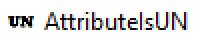
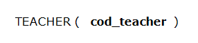

Set attribute as UN
To set a attribute as unique, we must use the AttributeIsUN Tool

With the AttributeIsUN Tool you click on the attribute you want to become unique
And the attribute will will become unique or cease to be if it was already before

To stop using the tool press escape.